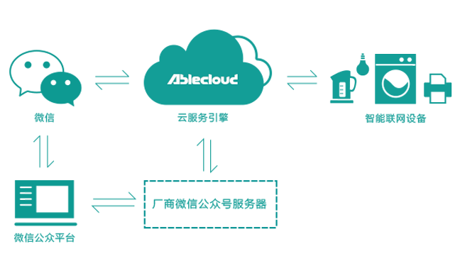

微信公众号开发参考
架构框图
AbleCloud实现了和微信的云端对接，其架构如下：

在整个架构中，ac-weixin-server代表厂商的公众号后台服务。
PHP SDK
AbleCloud提供了开发实现AbleCloud与微信云端对接的微信公众号的PHP语言SDK。
-
子目录 lib/ablecloud
AbleCloud云端服务API。
-
子目录 lib/bridge
AbleCloud与第三方云平台对接的工具。与微信对接：ACBridgeWeChat。
-
子目录 demo
微信公众号与AbleCloud对接demo。
-
子目录 docs
API参考文档。首页名字：index.html。
-
适用PHP版本
本SDK使用了PHP v5.6及其后续版本才支持的不定长参数。使用v5.6之前版本PHP的开发者可以修改文件 ablecloud/services/ACStoreScanner.php 第45行及第123行，分别去掉行中函数select及函数groupBy参数列表里的'...'符号，并在调用此两行所对应的函数时使用字符串数组作为参数。
下文是PHP SDK (v1.3.x)的API说明。
对接微信
ACBridgeWeChat
/**
* AbleCloud-微信公众号服务接口。
* 主要用于同步用户信息及用户与设备的绑定关系。
*/
class ACBridgeWeChat {
/**
* 构造函数。
* @param $accessToken 字符串，是微信公众号的Access Token。注意：微信的Access Token的有效期是有期限限制的。
* @param $jsTicket 字符串，是微信公众号的JS API Ticket。注意：微信公众号的JS API Ticket的有效期是有期限限制的。
*/
function __construct($accessToken, $jsTicket);
/**
* 设置/更新微信公众号的Access Token。
* @param $accessToken 字符串，是新的Access Token。
*/
public function setAccessToken($accessToken);
/**
* 设置/更新微信公众号的JS API Ticket。
* @param $jsTicket 字符串，是新的JS API Ticket。
*/
public function setJsTicket($jsTicket);
/// @name 微信推送的事件的处理方法
//@{
/**
* 微信推送消息：MsgType为"event"，Event为"subscribe"时的响应函数：将微信用户注册为开发者所提供服务的用户。
* @param $xmlMsg 微信推送的原始XML消息内容。
* @return 操作成功时返回ACUser对象，表示新注册的用户信息。失败时返回NULL，并且可调用getLastError()方法获取错误消息。
*/
public function onEventSubscribe($xmlMsg);
/**
* 微信推送消息：MsgType为"event"，Event为"unsubscribe"时的响应函数：在AbleCloud平台中解除该用户与所有设备的绑定关系。
* @param $xmlMsg 微信推送的原始XML消息内容。
* @return 返回TRUE表示操作成功，否则返回FALSE。失败时，可调用getLastError()方法获取错误消息。
*/
public function onEventUnsubscribe($xmlMsg);
/**
* 微信推送消息：MsgType为"device_event"，Event为"bind"时的响应函数：将微信记录的用户与设备的绑定关系同步到AbleCloud平台。
* @param $xmlMsg 微信推送的原始XML消息内容。
* @param $deviceName 字符串，表示设备的显示名。
* @param $subDomain 字符串，是将要绑定的设备在AbleCloud平台上所属的子域的名字。如果设备的二维码信息中包含了其所属子域的名字，则以二维码中的信息为准。
* @param $isGateway 布尔值，为TRUE时表示设备是网关设备；为FALSE时表示设备是独立设备。
* @return 操作成功时返回ACDevice对象，表示绑定后设备的信息。失败时返回NULL，并且可调用getLastError()方法获取错误消息。
*/
public function onDeviceEventBind($xmlMsg, $deviceName, $subDomain, $isGateway);
/**
* 微信推送消息：MsgType为"device_event"，Event为"unbind"时的响应函数：将微信记录的用户与设备解除绑定的关系同步到AbleCloud平台。
* @details 本方法解绑设备后会自动通知微信平台执行额外的设备绑定关系同步。
* @param $xmlMsg 微信推送的原始XML消息内容。
* @param $subDomain 字符串，是要解绑的设备在AbleCloud平台上所属的子域的名字。
* @param $isGateway 布尔值，为TRUE时表示该设备为网关设备，否则表示该设备为独立设备。
* @return 操作成功时返回TRUE；失败时返回FALSE，并且可调用getLastError()方法获取错误消息。
*/
public function onDeviceEventUnbind($xmlMsg, $subDomain, $isGateway);
/**
* 微信推送消息：MsgType为"device_event"，Event为"subscribe_status"时的响应函数：微信订阅设备状态信息（目前微信仅查询WIFI设备的状态信息）。
* @param $xmlMsg 微信推送的原始XML消息内容。
* @return 返回XML格式的文本内容，表示可回复给微信的设备状态信息。返回空字符串表示操作失败，并且可调用getLastError()方法获取错误消息。
*/
public function onDeviceEventSubscribeStatus($xmlMsg);
/**
* 微信推送消息：MsgType为"device_event"，Event为"unsubscribe_status"时的响应函数：微信退订设备状态信息（目前微信仅查询WIFI设备的状态信息）。
* @param $xmlMsg 微信推送的原始XML消息内容。
* @return 返回XML格式的文本内容，表示可回复给微信的设备状态信息。返回空字符串表示操作失败，并且可调用getLastError()方法获取错误消息。
*/
public function onDeviceEventUnsubscribeStatus($xmlMsg);
//@}
/**
* 获取开发者用户信息。
* @param $openId 字符串，是要检查的微信用户的OpenID。
* @return 操作成功时返回ACUser对象，表示AbleCloud平台存储的用户信息。返回NULL表示失败，并且可调用getLastError()方法获取错误消息。
*/
public function getUser($openId);
/**
* 获取用户的OpenId。
* @param $userId 整数，是用户在AbleCloud平台上的ID。
* @return 返回一个字符串，表示用户在微信系统中对应的OpenID。如果返回值为空字符串，表示操作失败。此时，可调用getLastError()方法获取错误信息。
*/
public function getUserOpenId($userId);
/**
* 设置用户的手机号。
* @param $openId 字符串，是微信用户的OpenID。
* @param $phone 字符串，是用户的新手机号。
* @param $verifyCode 字符串，是用户修改手机号码的验证码。
* @return 操作成功时返回TRUE；否则返回FALSE，并且可调用getLastError()获取错误信息。
*/
public function setPhone($openId, $phone, $verifyCode);
/**
* 获取设备的二维码：微信二维码（附加设备在AbleCloud平台上所属的子域的信息），还可选择是否附加AbleCloud分享码。附加的信息是以JSON格式的字符串表示的。
* @param $physicalId 字符串，表示设备的物理ID。
* @param $subDomain 字符串，表示设备在AbleCloud平台中所属的子域的名字。如果值不为空字符串，则会以第三方自定义数据的方式在微信标准二维码的末尾附加该子域信息。
* @param $withACShareCode 布尔值，为TRUE时表示需要附加设备的AbleCloud分享码，否则表示不需附加该信息。
* @param $openId $withShareCode为TRUE时，需要指定获取该分享码的用户的微信OpenID。仅设备的管理员用户有权限获取设备的分享码。
* @param $timeout $withShareCode为TRUE时，需要指定分享码的有效时长。该参数的类型为整数，是以秒为单位指定分享码的有效时长。
* @return 操作成功时返回制作设备二维码的字符串。依据参数设置，该字符串中可能包含AbleCloud平台的分享码。操作失败时返回空字符串，此时可调用getLastError()方法获取错误消息。
*/
public function getDeviceQRCode($physicalId, $subDomain, $withACShareCode = FALSE, $openId = '', $timeout = 300);
/// @name 信息同步方法。
//@{
/**
* 针对指定用户，同步AbleCloud平台与微信硬件平台记录的用户-设备绑定信息。同时检查指定设备的在线状态。
* @details 在响应微信硬件平台推送的subscribe_status/unsubscribe_status事件（比如用户打开/关闭公众号主界面）的方法 #onDeviceEventSubscribeStatus 及 #onDeviceEventUnsubscribeStatus 中，
* 会调用本方法同步数据。开发者也可根据实际情况主动调用本方法同步数据，比如处理蓝牙设备绑定关系的同步，或者将用户从“家”或“房间”里移除之后。
* @param $openId 字符串，是待检查的用户的微信OpenID。
* @param $physicalIdOfStatus 字符串，是要查询其在线状态的设备的物理ID。
* @return 返回TRUE表示待查询的设备在线；返回FALSE表示待查询的设备不在线。
*/
public function syncBindings($openId, $physicalIdOfStatus = '');
/**
* 针对指定设备，同步AbleCloud平台与微信硬件平台记录的用户-设备绑定信息。
* @details 在调用AbleCloud平台提供的API解除了某用户与设备的绑定关系后，或者将设备从“房间”或“家”中移除后，开发者需要调用本方法在AbleCloud平台与微信平台之间同步设备与用户的绑定关系。
* 在其它情况下，开发者也可根据实际情况主动调用本方法同步数据。
* @param $physicalId 字符串，是设备的物理ID。
* @param $deviceType 字符串，是本设备在微信公众号平台上的设备类型。
* @param $subDomain 字符串，是本设备在AbleCloud平台上所属的子域的名字。
* @return 操作成功时返回TRUE；操作失败时返回FALSE，同时可调用方法getLastError()获取错误信息。
*/
public function syncBindingsByDevice($physicalId, $deviceType, $subDomain);
/**
* 删除一个“家”对象。
* @details 微信公众号开发者应该通过本方法来删除“家”。本方法将在AbleCloud平台与微信平台之间同步因删除“家”而引起的用户-设备绑定关系的变更。
* @param $openId 字符串，是发起删除“家”这个操作的用户的OpenID。
* @param $homeId 整数，是要被删除的“家”的ID。
* @return 操作成功时返回TRUE，操作失败时返回FALSE。操作失败时，可以调用方法getLastError()获取错误信息。
*/
public function deleteHome($openId, $homeId);
//@}
/**
* 取最近一次错误消息。
* @return 返回一个包含错误码和消息的关联数组：['errCode': 0, 'errMessage': '']。errCode为0时表示没有错误发生。
*/
public function getLastError();
}
AbleCloud API
请参考PHP SDK开发参考。
Java SDK
与上文所述的PHP SDK的结构类似，微信公众号的Java SDK也是在AbleCloud Java API的基础上提供了与微信公众号平台对接的API。
对接微信
ACWeChatConfig
/**
* AbleCloud-微信公众号服务接口配置。
*/
public class ACWeChatConfig extends ACConfig {
/**
* 构造函数。
* @param majorDomain 开发者在AbleCloud平台上对应的主域的名字。
* @param developerId 开发者在AbleCloud平台上对应的开发者帐号的ID。
* @param accessKey 开发者在AbleCloud平台上可用的密钥对中的Access Key。
* @param secretKey 开发者在AbleCloud平台上可用的密钥对中的Secret Key。
* @param routerUrl AbleCloud云端服务的入口地址，如：http://test.ablecloud.cn:5000。
*/
public ACWeChatConfig(String majorDomain, long developerId, String accessKey, String secretKey, String routerUrl);
/**
* 取开发者帐号ID。
* @return 开发者帐号ID。
*/
public long getDeveloperId();
/**
* 取主域名字。
* @return 主域名字。
*/
public String getMajorDomain();
/**
* 取开发者密钥对中的Access Key。
* @return 密钥对中的Access Key。
*/
public String getAuthAccessKey();
/**
* 取开发者密钥对中的Secret Key。
* @return 密钥对中的Secret Key。
*/
public String getAuthSecretKey();
/**
* 设置AbleCloud云端服务的入口地址。
* @param addrs 可以用英语逗号（,）分隔多个地址。如："192.168.0.1:5000"，或者"192.168.0.1:5000,192.168.0.2:5000"，
* 或者"http://192.168.0.1:5000"，或者"http://192.168.0.1:5000,https://192.168.0.2:5000"，或者"192.168.0.1:5000,https://192.168.0.2:5000"。
* 如果地址中没有指定协议（http或者https），则使用http协议。
*/
public void setRouterAddr(String addrs);
/**
* 取AbleCloud云端服务的入口地址。
* @return 返回的地址的格式是：http://host:port 或 https://host:port。
*/
public String getRouterAddr();
}
ACBridgeWeChat
/**
* AbleCloud-微信公众号服务接口。
*/
public class ACBridgeWeChat {
/**
* 构造函数。
* @param accessToken 微信公众号的Access Token。注意：微信的Access Token的有效期是有期限限制的。
* @param jsTicket 微信公众号的JS API Ticket。注意：微信公众号的JS API Ticket的有效期是有期限限制的。
* @param ac AbleCloud云端服务代理工具。
*/
public ACBridgeWeChat(String accessToken, String jsTicket, AC ac);
/**
* 设置/更新微信公众号的Access Token。
* @param accessToken 是新的Access Token。
*/
public void setAccessToken(String accessToken);
/**
* 取微信公众号的Access Token。
* @return 微信公众号的Access Token。
*/
public String getAccessToken();
/**
* 设置/更新微信公众号的JS API Ticket。
* @param jsTicket 是新的JS API Ticket。
*/
public void setJsTicket(String jsTicket);
/**
* 取微信公众号的JS API Ticket。
* @return 微信公众号的JS API Ticket。
*/
public String getJsTicket();
/**
* 取AC对象。
* @return AC对象。
*/
public AC getAC();
/// @name 微信推送的事件的处理方法
//@{
/**
* 微信推送消息：MsgType为"event"，Event为"subscribe"时的响应函数：将微信用户注册为开发者所提供服务的用户。
* @param fromUserName 微信推送的原始XML消息中子元素<FromUserName>的内容。
* @return 操作成功时返回ACAccount对象，表示新注册的用户信息。
* @throws Exception
*/
public ACAccount onEventSubscribe(String fromUserName) throws Exception;
/**
* 微信推送消息：MsgType为"event"，Event为"unsubscribe"时的响应函数：在AbleCloud平台中解除该用户与所有设备的绑定关系。
* @param fromUserName 微信推送的原始XML消息中子元素<FromUserName>的内容。
* @param toUserName 微信推送的原始XML消息中子元素<ToUserName>的内容。
* @return 返回TRUE表示操作成功，否则返回FALSE。
* @throws Exception
*/
public void onEventUnsubscribe(String fromUserName, String toUserName) throws Exception;
/**
* 微信推送消息：MsgType为"device_event"，Event为"bind"时的响应函数：将微信记录的用户与设备的绑定关系同步到AbleCloud平台。
* @param fromUserName 微信推送的原始XML消息中子元素<FromUserName>的内容。
* @param deviceId 微信推送的原始XML消息中子元素<DeviceID>的内容。
* @param content 微信推送的原始XML消息中子元素<Content>的内容。
* @param deviceName 设备被绑定后的显示名。
* @param subDomain 将要绑定的设备在AbleCloud平台上所属的子域的名字。如果设备的二维码信息中包含了其所属子域的名字（参数content），则以二维码中的信息为准。
* @param isGateway 是否为网关设备。
* @return 绑定后设备的信息。
* @throws Exception
*/
public ACUserDevice onDeviceEventBind(String fromUserName, String deviceId, String content,
String deviceName, String subDomain, boolean isGateway) throws Exception;
/**
* 微信推送消息：MsgType为"device_event"，Event为"unbind"时的响应函数：将微信记录的用户与设备解除绑定的关系同步到AbleCloud平台。
* @param fromUserName 微信推送的原始XML消息中子元素<FromUserName>的内容。
* @param deviceId 微信推送的原始XML消息中子元素<DeviceID>的内容。
* @param deviceType 微信推送的原始XML消息中子元素<DeviceType>的内容。
* @param subDomain 将要被解除绑定的设备在AbleCloud平台上所属的子域的名字。
* @param isGateway 是否为网关设备。
* @throws Exception
*/
public void onDeviceEventUnbind(String fromUserName, String deviceId, String deviceType,
String subDomain, boolean isGateway) throws Exception;
/**
* 微信推送消息：MsgType为"device_event"，Event为"subscribe_status"时的响应函数：微信订阅设备状态信息（目前微信仅查询WIFI设备的状态信息）。
* @param fromUserName 微信推送的原始XML消息中子元素<FromUserName>的内容。
* @param toUserName 微信推送的原始XML消息中子元素<ToUserName>的内容。
* @param deviceId 微信推送的原始XML消息中子元素<DeviceID>的内容。
* @param deviceType 微信推送的原始XML消息中子元素<DeviceType>的内容。
* @return 返回XML格式的文本内容，表示可回复给微信的设备状态信息。
* @throws Exception
*/
public String onDeviceEventSubscribeStatus(String fromUserName, String toUserName, String deviceId, String deviceType) throws Exception;
/**
* 微信推送消息：MsgType为"device_event"，Event为"unsubscribe_status"时的响应函数：微信退订设备状态信息（目前微信仅查询WIFI设备的状态信息）。
* @param fromUserName 微信推送的原始XML消息中子元素<FromUserName>的内容。
* @param toUserName 微信推送的原始XML消息中子元素<ToUserName>的内容。
* @param deviceId 微信推送的原始XML消息中子元素<DeviceID>的内容。
* @param deviceType 微信推送的原始XML消息中子元素<DeviceType>的内容。
* @return 返回XML格式的文本内容，表示可回复给微信的设备状态信息。
* @throws Exception
*/
public String onDeviceEventUnsubscribeStatus(String fromUserName, String toUserName, String deviceId, String deviceType) throws Exception;
//@}
/// @name 数据同步
//@{
/**
* 针对指定用户，同步AbleCloud平台与微信硬件平台记录的用户-设备绑定信息。同时检查指定设备的在线状态。
* @details 在响应微信硬件平台推送的subscribe_status/unsubscribe_status事件（比如用户打开/关闭公众号主界面）的方法 #onDeviceEventSubscribeStatus 及 #onDeviceEventUnsubscribeStatus 中，
* 会调用本方法同步数据。开发者也可根据实际情况主动调用本方法同步数据，比如处理蓝牙设备绑定关系的同步，或者将用户从“家”或“房间”里移除之后。
* @param openId 是待检查的用户的微信OpenID。
* @param physicalIdOfStatus 是要查询其在线状态的设备的物理ID。如果为null或者空字符串则表示不检查任何设备的在线状态。
* @return 待查询的设备是否在线。
* @throws Exception
*/
public boolean syncBindings(String openId, String physicalIdOfStatus) throws Exception;
/**
* 针对指定设备，同步AbleCloud平台与微信硬件平台记录的用户-设备绑定信息。
* @details 在调用AbleCloud平台提供的API解除了某用户与设备的绑定关系后，或者将设备从“房间”或“家”中移除后，开发者需要调用本方法在AbleCloud平台与微信平台之间同步设备与用户的绑定关系。
* 在其它情况下，开发者也可根据实际情况主动调用本方法同步数据。
* @param physicalId 设备的物理ID。
* @param deviceType 本设备在微信公众号平台上的设备类型。
* @param subDomain 本设备在AbleCloud平台上所属的子域的名字。
* @throws Exception
*/
public void syncBindingsByDevice(String physicalId, String deviceType, String subDomain) throws Exception;
/**
* 删除一个“家”对象。
* @details 微信公众号开发者应该通过本方法来删除“家”。本方法将在AbleCloud平台与微信平台之间同步因删除“家”而引起的用户-设备绑定关系的变更。
* @param openId 发起删除“家”这个操作的用户的OpenID。
* @param homeId 要被删除的“家”的ID。
* @throws Exception
*/
public void deleteHome(String openId, long homeId) throws Exception;
//@}
/**
* 根据OpenId获取用户信息。
* @param openId 用户的微信OpenID。
* @return 返回该用户的信息。
* @throws Exception
*/
public ACAccount getUser(String openId) throws Exception;
/**
* 获取用户的微信OpenId。
* @param userId 用户在AbleCloud平台上的ID。
* @return 用户的微信OpenId。
* @throws Exception
*/
public String getUserOpenId(long userId) throws Exception;
/**
* 设置用户的手机号。
* @param openId 用户的微信OpenID。
* @param phone 用户的新手机号。
* @param verifyCode 用户修改手机号码的验证码。
* @throws Exception
*/
public void setPhone(String openId, String phone, String verifyCode) throws Exception;
/**
* 获取设备的二维码：微信二维码（附加设备在AbleCloud平台上所属的子域的信息）。附加的信息是以JSON格式的字符串表示的。
* @param physicalId 设备的物理ID。
* @param subDomain 设备在AbleCloud平台中所属的子域的名字。如果值不为空字符串，则会以第三方自定义数据的方式在微信标准二维码的末尾附加该子域信息。
* @return 设备的微信二维码（可能包含设备在AbleCloud平台上所属的子域的名字）。
* @throws Exception
*/
public String getDeviceQRCode(String physicalId, String subDomain) throws Exception;
/**
* 获取设备的二维码：微信二维码：附加设备在AbleCloud平台上所属的子域的信息以及设备分享码信息。附加的信息是以JSON格式的字符串表示的。
* @param physicalId 设备的物理ID。
* @param subDomain 设备在AbleCloud平台中所属的子域的名字。如果值不为空字符串，则会以第三方自定义数据的方式在微信标准二维码的末尾附加该子域信息。
* @param userId 获取该分享码的用户在AbleCloud平台上的帐号Id。仅设备的管理员用户有权限获取设备的分享码。
* @param timeout 分享码的有效时长。单位为秒。
* @return 设备的微信二维码：附加设备在AbleCloud平台上所属的子域的信息以及设备分享码信息。
* @throws Exception
*/
public String getDeviceQRCode(String physicalId, String subDomain, long userId, long timeout) throws Exception;
}
示例：创建ACBridgeWeChat对象。
import com.ablecloud.cloudservice.ACCloud;
ACWetChatConfig conf = new ACWeChatConfig(majorDomain, developerId, accessKey, secretKey, routerUrl);
ACCloud ac = new ACCloud(conf);
ACBridgeWeChat bridge = new ACBridgeWeChat(accessToken, jsTicket, ac);
AbleCloud API
请参考Java SDK开发参考。